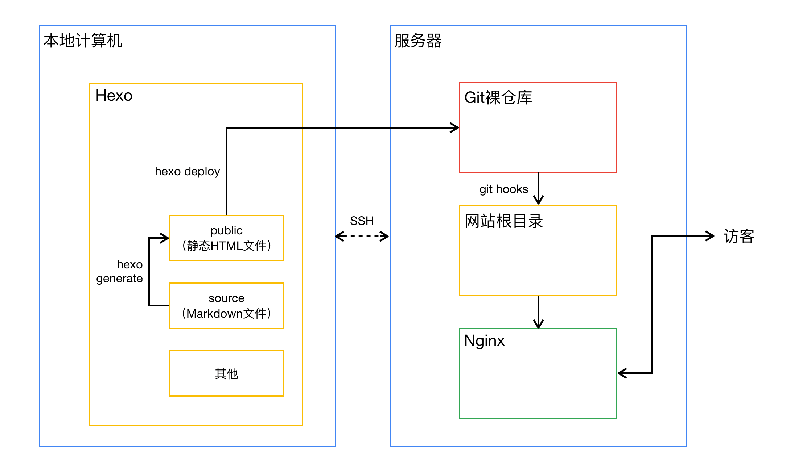
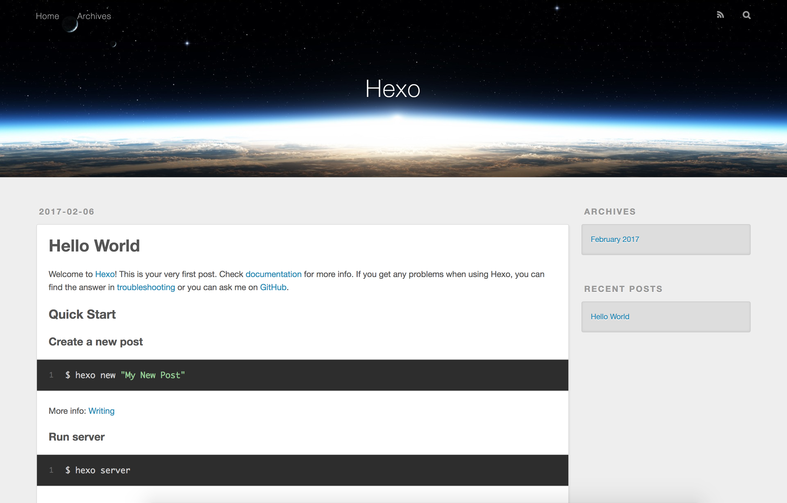

博客搭建记
本文记录我搭建这个博客的过程。
1. VPS及域名
1.1 VPS（Virtual Private Server）
我选择的是 Vultr 的虚拟主机。具体情况如下表。我买的时候正好有新活动，新用户充值多少送多少，最高到 $100。选择国外的服务器，最主要的目的是为了**，还有个好处是博客不需要备案。速度方面其实也不用担心，我一个小博客就是给自己记记东西的，不求访问量什么的。
| Price | Location | CPU | RAM | Storage | Bandwidth | OS |
|---|---|---|---|---|---|---|
| $5/Month | Tokyo | 1 vCore | 768MB | 15GB SSD | 1000GB/Month | CentOS 7 x64 |
1.2 域名 DNS
我注册了个免费的域名先试试水，可以用一年。免费的顶级域名只有几个，.tk 是托克劳国家及地区顶级域（ccTLD）的域名。到 Freenom 注册个账号，选个域名，最多免费用一年。Freenom 提供了免费的域名解析服务，如果想优化速度的话可以换成 CloudXNS 解析服务，也是免费的。具体流程参考 教你申请.tk/.ml/.cf/.gq/.ga等免费域名 - 逗比根据地 和 使用 CloudXNS 接管 Freenom 的免费域名解析，加快国内生效速度！ - 逗比根据地。
2. 工具和方案
2.1 工具
我选择的博客搭建方案是 Hexo + Git + Nginx。选择 Hexo 的原因是轻，原来用 WordPress 搭过本地博客，作为个人笔记。给我的感觉就是重、麻烦，马上转到了印象笔记去。用了一年多还是觉得不舒服，编辑器不好用，不支持 Markdown。不过收藏文章确实是非常棒。要用到的东西列在下面。
- 本地电脑（macOS）
- 远程服务器（CentOS 7）
- Hexo：快速、简洁且高效的博客框架
- Git：Everything is local
- Nginx：A free, open-source, high-performance server
- Node.js：Hexo 基于它
2.2 架构
为什么需要以上工具？走完整个流程或者做足准备之后都能明白它们的作用和联系。既然是写总结，就先理一遍，一张图可以很好的解释。

这张图是我看了 博客的架构@WensonSmith - segmentfault 的图之后，自己动手用 Keynote 画了一遍，加深印象。简单用文字描述一下就是 hexo 只是在本地把写好的 Markdown 文件按照主题、格式等渲染成HTML文件，然后通过 Git 把网站文件 push 到远程仓库，Git还有自动部署的功能 git hooks。网站文件被 push 的时候，触发 git hooks 自动把它们部署到网站的根目录。之后就靠 Nginx 把网站呈现给访客。
使用起来我感觉很方便，写好 Markdown，只需要几个命令就完成部署，而且都在本地完成！不需要登录远程服务器。
3. 搭建流程
3.1 本地端操作
这一部分参考 Hexo官方文档 最清楚了。我记录下流程。
3.1.1 Hexo 安装（包括 Node.js、Git）
Git：macOS 已经自带。
安装 nvm 以方便安装 Node.js
$ curl https://raw.github.com/creationix/nvm/master/install.sh | sh
重启 Terminal，安装 Node.js
$ nvm install stable
安装 Hexo。-g 代表全局安装。
$ npm install -g hexo-cli
3.1.2 设置我的本地博客
工具都准备好了，下面开始搭建架在本地的 Hexo 博客。
先确定好要把博客放在哪里。我把自己的用户目录下的 Blog 文件夹作为网站根目录。绝对路径如下
$ pwd #查看当前路径
/Users/username/Blog
在 Blog 目录内，
$ hexo init
$ npm install
Blog 目录内有以下结构
.
├── _config.yml #网站配置文件
├── package.json
├── scaffolds #模板
├── source #原始Markdown文件、资源
| ├── _drafts
| └── _posts
├── themes #主题
└── node_modules #相关模块。之后安装 hexo-server 等也会安装在里面
Hexo 3.0 把服务器独立成了个别模块，需要手动安装。要确保在 Blog 目录内。
$ pwd
/Users/username/Blog
$ npm install hexo-server --save
至此，本地的博客已经搭好了。启动吧！
$ hexo server #要在 Blog 目录内，否则命令无效
INFO Start processing
INFO Hexo is running at http://localhost:4000/. Press Ctrl+C to stop.
有以上信息反馈说明运行正常。浏览器打开 http://localhost:4000/ 查看博客。

之后参考 Hexo官方文档 自行设置博客。完全可以在本地把博客熟悉、打点好。
3.2 服务端操作
3.2.1 Nginx 安装和配置
VPS 上装的是 CentOS 7 x64，我采用源码安装的方式。Nginx官网 下载 Tarball 包，参考 官方Wiki 基本可以搞定，还需要配置防火墙、开机自启、配置文件等。
通过 SSH 远程 root 登录 VPS
$ ssh root@ip
下载 Nginx 源码，开始安装
$ wget http://nginx.org/download/nginx-x.xx.x.tar.gz
$ tar -xvf nginx-x.xx.x.tar.gz
$ cd nginx-x.xx.x
$ ./configure
$ make
$ make install
Nginx 默认安装在 ／usr/local/nginx 目录，bin 文件是 /usr/local/nginx/sbin/nginx，并不在系统环境变量里，添加一个链接：
$ ln -s /usr/local/nginx/sbin/nginx /usr/sbin/nginx
直接输入命令 nginx 启动
$ nginx
$ ps -A | grep nginx
xxxx ? 00:00:00 nginx
xxxy ? 00:00:00 nginx
然后在本地浏览器输入 VPS 的 ip 访问看看，如果出现 “Welcome to Nginx!” 页面，说明成功了。一般来说是不行的，因为有防火墙。要在防火墙中设置允许 http 外网才能访问。
CentOS 7 中采用了 firewalld 代替原来的 iptables 作为系统防火墙。允许 http 和 https：
$ firewall-cmd --permanent --zone=public --add-service=http
$ firewall-cmd --permanent --zone=public --add-service=https
$ firewall-cmd --reload
设置开机启动。CentOS 7 用了 systemd，因此做一个服务更为方便。参考 Wiki NGINX systemd service file。写一个 nginx.service 文件放到 /lib/systemd/system/ 下，内容要做适当修改，尤其是目录路径。修改后如下
[Unit]
Description=The NGINX HTTP and reverse proxy server
After=syslog.target network.target remote-fs.target nss-lookup.target
[Service]
Type=forking
PIDFile=/usr/local/nginx/logs/nginx.pid
ExecStartPre=/usr/local/nginx/sbin/nginx -t
ExecStart=/usr/local/nginx/sbin/nginx
ExecReload=/bin/kill -s HUP $MAINPID
ExecStop=/bin/kill -s QUIT $MAINPID
PrivateTmp=true
[Install]
WantedBy=multi-user.target
然后设置 Nginx 开机启动很方便了
$ systemctl enable nginx.service
列一下一些基本命令用法，更详细的内容就要深入了解下 systemd
systemctl enable nginx.service #开机运行nginx
systemctl disable nginx.service #取消开机运行nginx
systemctl start nginx.service #启动nginx
systemctl stop nginx.service #停止nginx
systemctl restart nginx.service #重启nginx
systemctl reload nginx.service #重新加载nginx配置文件
systemctl status nginx.service #查询nginx运行状态
3.2.2 Git 安装和配置
CentOS自带，省的安装了。这一节是写创建专门的 user 来进行操作，以及配置服务端与本地电脑的 SSH 免密链接。需要注意的点是权限。
创建名叫 git 的用户
$ useradd git
给予 sudo 权限
$ chmod 740 /etc/sudoers
$ vi /etc/sudoers
...
找到这个内容，并加上一行
## Allow root to run any commands anywhere
root ALL=(ALL) ALL
git ALL=(ALL) ALL #手动加的一行
$ chmod 400 /etc/sudoers
设置 git 用户的密码
$ passwd git
接下去配置 SSH 免密登录，才能实现 Hexo 自动部署。把本地电脑的 SSH 公钥加入到服务器里。ls -a 看看本地电脑用户目录下有没有 .ssh 这个隐藏目录，没有的话生成一对私钥和公钥。参考了 廖雪峰的Git教程之远程仓库
$ ssh-keygen -t rsa -C "youremail@example.com"
本地用户目录下的 .ssh 目录里有
.
├── id_rsa #私钥
├── id_rsa.pub #公钥
└── known_hosts #记录的是远程主机的公钥
然后就是要把公钥给 VPS 上的 git 用户，且是放在 /home/git/.ssh/authrized_keys 文件里面。有两种方法。
第一种非常方便，本地电脑 Terminal 输入以下命令即可
$ ssh-copy-id git@ip
第二种就是手动复制，要注意权限。先复制 id_rsa.pub 里的内容
$ cat ~/.ssh/id_rsa.pub
登录 VPS，切换到 git 用户
$ su git
$ mkdir /home/git/.ssh
$ touch /home/git/.ssh/authorized_keys
然后用 vi 或 vim 把公钥复制进去。设置权限：
$ chmod 700 /home/git/.ssh
$ chmod 600 /home/git/.ssh/authorized_keys
完成后在本地电脑测试下看看是否能免密登录
$ ssh git@ip
3.3 部署网站
3.3.1 网站根目录配置
决定好要把网站放在那里。一般放置在 /var/www/ 下，我取名为 blog，cd 到里面，此时路径为
$ pwd
/var/www/blog
一定要注意用户权限。为了之后 git hooks 能成功自动部署以及网站能被访问，需要修改目录用户和群组为 git，
$ chown git:git /var/www/blog
other 要有访问权限，确保 www 和 blog 目录的 other 组权限为 r-x。
都配置好之后如下
$ ls -ld /var/www /var/www/blog
drwxr-xr-x x root root 4096 Feb x xx:xx www
drwxr-xr-x xx git git 4096 Feb x xx:xx www/blog
设置 Nginx 把该目录作为网站根目录。找到其配置文件 nginx.conf，路径为
$ find / -name nginx.conf
/usr/local/nginx/conf/nginx.conf
用 vi 编辑。默认是把 /usr/local/nginx/html 作为网站根目录的， cd 到里面就发现 Welcome to nginx! 的 index.html 文件啦。所以改配置文件只需要替换路径就可以了
http {
...
server {
listen 80;
server_name localhost;
...
location / {
root html; #把 html 改成 /var/www/blog
index index.html index.htm;
}
...
其他 404、50x 页面的地址可以不用改，暂时先用 Nginx 默认的。
3.3.2 Git hooks 配置
首先要创建 Git 裸仓库。Git 裸仓库可以放置在 git 用户的用户目录里，并取名为 blog.git。cd 到仓库里，因此，我的路径为
$ pwd
/home/git/blog.git
配置下 git hooks 触发条件。/home/git/hooks 里面有很多样例。要用到的是 post-receive，没有的话新建一个，然后编辑其内容为
#!/bin/sh
git --work-tree=/var/www/blog --git-dir=/home/git/blog.git checkout -f #设置目录
加上可执行权限
$ chmod +x /home/git/blog.git/hooks/post-receive
3.3.3 本地 Hexo 部署配置
Hexo 集成了 Git 部署功能，所以设置起来很简单，参考 Hexo官方文档。
编辑下配置文件 _config.yml，注意缩进。
# Deployment
## Docs: https://hexo.io/docs/deployment.html
deploy:
type: git
repo: git@ip:/home/git/blog.git #远程仓库的地址
然后测试下能否被 push 并自动部署
$ pwd
/Users/username/Blog
$ hexo clean #清除旧文件
$ hexo generate #渲染
$ hexo deploy #push到远程仓库。push后git hooks会自动触发执行
一切顺利，赶紧打开浏览器，输入 VPS 的 ip 看看：”Hello, World!”
3.3.4 基本博客操作
写一篇post需要以下步骤：
$ hexo new "post_title" #根据scaffolds里的模板，在source/_posts生成新文章post_title.md用Markdown编辑器编辑写作
$ hexo clean $ hexo generate $ hexo deploy #可以整合为以下命令 $ hexo clean;hexo g -d